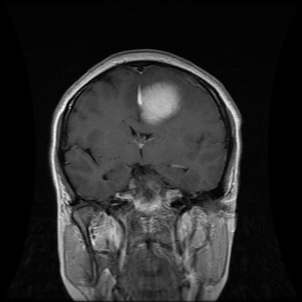

Upload MRI's Scan Image
Drag & drop gambar atau pilih file untuk analisis
Tidak ada gambar? Coba salah satu dari ini:



Dengan mengunggah gambar atau URL, Anda menyetujui Ketentuan Layanan kami. Untuk mempelajari lebih lanjut tentang cara kami menangani data pribadi Anda, lihat Kebijakan Privasi kami.